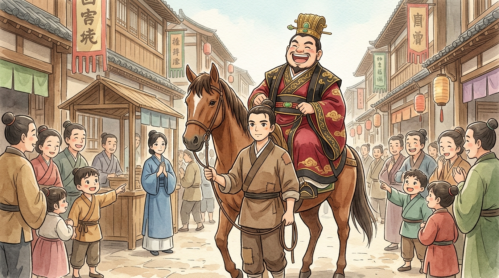
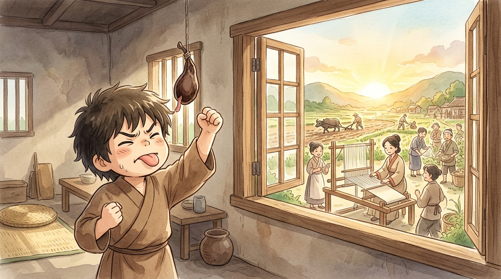
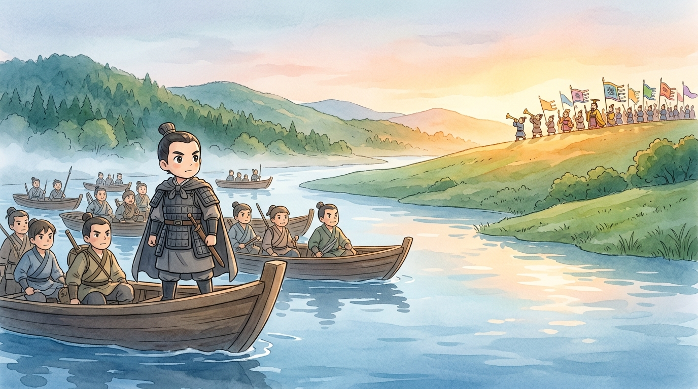

What you are about to read, little reader, was never meant to be read. These are pages from the secret diary of Goujian (勾踐), King of Yue (越) — kept hidden for over two thousand years. Historians1 tell us WHAT he did. Only a diary could tell us how it felt. Read gently. It begins on the worst day of his life.
📔 Year 1 — The worst day
They have beaten us. I, a king, write this from a camp on Mount Kuaiji (會稽山) with the last five thousand of my soldiers, while King Fuchai (夫差) of Wu (吳) surrounds us with an ocean of troops. My own fault — my advisors Fan Li (范蠡) and Wen Zhong (文種) warned me not to attack Wu so rashly, and I was too proud to listen.2 Pride (驕傲) has cost me my kingdom.
Fan Li says there is exactly one move left: surrender, and offer myself as Fuchai's SERVANT (僕人). Me. A king. Mucking out stables in an enemy palace. I raged at him. He answered calmly: "A man who cannot bend will break. Live low today, Majesty, so Yue may stand tall tomorrow." … I have agreed. Heaven help me, tomorrow I trade my crown for a stable-boy's brush.
📔 Year 2 — The stable
Fuchai's advisor Wu Zixu (伍子胥) urged him to execute me at once — "Spare the king of Yue," he said, "and you plant a seed of your own ruin." A wise man; I would tremble, except Fuchai does not listen to him. Fuchai prefers ministers who flatter, and my gifts have made those ministers very talkative on my behalf.
My wife and I sleep in a stone hut beside the horses. I feed them, brush them, shovel what horses shovel. When Fuchai rides out, I walk before his horse like a groom, and the crowds of Wu point and laugh: "Look! A king holding a bridle!" I bow, and smile, and speak softly: "Great King Fuchai is merciful." I have learned to make my face a mask. But at night, in the dark of our hut, I whisper to myself: remember this. Remember the laughter. Remember Kuaiji. REMEMBER.

📔 Year 3 — The test, and home
Fuchai fell ill this spring. I tended him day and night — so humbly, so devotedly, that the whole court murmured about my loyalty. When he recovered, he laughed at Wu Zixu: "You see? Goujian is a broken man. A harmless, faithful dog." And today — I can hardly write it — he has SET ME FREE. Wu Zixu shouted in the throne room that releasing me was like "returning a tiger to the mountains." Fuchai only laughed harder.
Note well, my diary: flattery (奉承) is a poison the mighty pour into their own cup. Fuchai believes what pleases him. That belief will be my road home.
📔 Year 4 — Firewood and gall
Home. Yue is poor, small, and mine. The palace still stands — soft beds, sweet fruit, musicians. Dangerous things. Comfort is how forgetting begins, and if I forget, everything we swallowed in Wu was for nothing.
So I have made two changes to the royal bedroom. First: I have thrown out the silk bedding, and I sleep on a pile of rough firewood (臥薪) — every knot and splinter a small voice in the night saying: "Not yet. Not comfortable yet." Second: from the ceiling I have hung a gall bladder (嘗膽) — the bitterest thing a kitchen can supply. Every morning before food, every evening before sleep, I lick it once. The bitterness (苦) floods my mouth and I ask aloud: "Goujian! Have you forgotten the shame (恥辱) of Kuaiji?" (勾踐！你忘了會稽之恥嗎？) And I answer: "Not yet. Never."3

📔 Years 5–14 — The ten-year plan
Fan Li and Wen Zhong have drawn up a plan they call "ten years to grow, ten years to train" (十年生聚，十年教訓). It is slow work, and slow work is invisible work — exactly as we want it.
I plough the fields with my own hands; the queen weaves cloth on her own loom. If the king farms, no farmer feels ashamed to farm harder. We feed the poor, honour the old, welcome every clever wanderer who crosses our borders. Families grow; the treasury fills, quietly. And the training of soldiers happens in the far valleys, where no Wu spy goes.
Meanwhile — Fan Li is an artist of the long game — we keep Fuchai fat with tribute: gold, timber, flattering letters, beautiful gifts.4 Every gift whispers to him: "Yue is harmless, Yue is loyal, look away, look away." And Fuchai looks away. He has begun building colossal palaces and marching north to bully distant states, draining his treasury to impress lords who fear but do not love him. His best advisor Wu Zixu keeps warning him about us. This year, Fuchai — weary of hearing it — forced the old man to take his own life. So dies the only pair of open eyes in Wu. I wrote no celebration in this diary. A king who kills his truest critic has already begun defeating himself.
📔 Year 20 — The tiger returns
Twenty years. Ten thousand mornings of bitterness on my tongue. This spring, while Fuchai marched his best troops far north to a grand conference of lords — vanity, always vanity — our army crossed into Wu at last. Our soldiers are farmers' sons we fed in famine, trained in secret, led by generals who slept on stones beside them. Wu's remaining soldiers are hungry and unpaid; their granaries went to banquet halls. It was not close.5
In the end, Fuchai — besieged and abandoned — sent me a message asking for the same mercy I once received from him: let him live as MY servant. My diary, I confess I wavered. It was Fan Li who spoke: "Heaven offered Wu the chance to destroy Yue, and Wu refused it. Refuse this, and the wheel only turns again." I offered Fuchai a comfortable island exile instead. He chose otherwise — he covered his face, saying he could not bear to meet Wu Zixu's eyes in the next world, and ended his own story. So passes the man who taught me everything: patience (耐心), humility (謙虛), and how a strong man falls.

📔 Final entry
Yue is now the strongest state in the south, and lords from every direction send congratulations. They call it a miracle. It was not a miracle. It was firewood and gall — ten thousand small, bitter, deliberate mornings, each one a brick in an invisible wall. Anyone can be brave for an afternoon, my diary. The rare thing is to be brave slowly.
The diary ends there, little reader. But the idiom it left behind — 臥薪嘗膽, "sleeping on firewood, tasting gall" — is alive and busy 2,500 years later. Students whisper it before big exams; athletes train under it; anyone rebuilding after a defeat leans on it. It means: turn your setback into your alarm clock. And it asks you a quiet question, the same one Goujian asked the dark each night: the goal you care about most — what small bitter thing will you do for it tomorrow morning? 📔